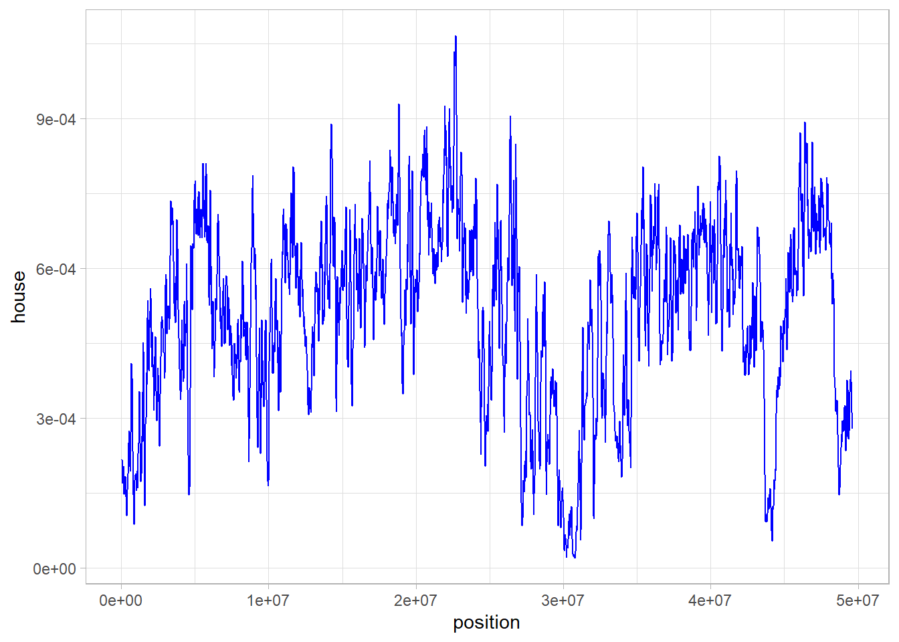
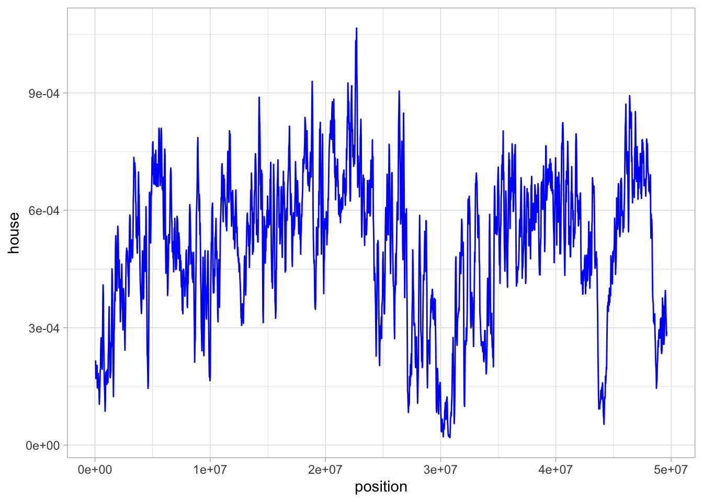

7.3 Calculating statistics at the whole genome level
So far we have calculated descriptive statistics from two sets of sequence data. This is obviously useful to demonstrate how these statistics work and reinforcing our understanding of them. However, in modern evolutionary genetics, we are often working with much larger datasets than what we have dealt with so far. As sequencing technology becomes cheaper, faster and more accessible, we are regularly working with genome-scale data. This has implications for how we handle data and also how we interpret it and use it to test hypotheses or make some form of evolutionary inference.
In this section of the tutorial, we will use a package called PopGenome to read variants called from whole genome resequencing data into R and then we will calculate nucleotide diversity within and among populations and also along a single chromosome. A word of caution: PopGenome is a very useful package, but it is not always the most user friendly, so we have done our best to simplify matters as much as possible here.
7.3.1 Reading in variant data
The data we are going to be working with for this section is a set of SNP calls from whole-genome resequencing of Passer sparrows. It was originally used in a study on the evolution of human commensalism in the house sparrow by Ravinet et al. (2018). In the dataset there are SNPs from four sparrow species - the house sparrow, the Italian sparrow, the Spanish sparrow, the tree sparrow and also data from a house sparrow sub-species known as the Bactrianus sparrow.
The data comes in two parts. We’ll deal with the actual SNP data first. This is stored in a file called a VCF, which stands for variant call format.
One thing you should know about VCF files is that they can quickly become very very big. The one we are using today is a much smaller, randomly sampled version of the true dataset from a single chromosome only, however it is still quite a large file size. Because it is large, the file is compressed and there are some preprocessing steps you will need to do before you can open in it in R.
- First, download the VCF
- Next, make a directory in your working directory (use
getwdif you don’t know where that is) and call itsparrow_snps - Move the downloaded VCF into this new directory and then uncompress it. If you do not have an program for this, you can either use the Unarchiver (Mac OS X) or 7zip (Windows).
- Make sure only the uncompressed file is present in the directory.
With these steps carried out, you can then read this data in like so:
ON MAC
sparrows <- readData("./sparrow_snps/", format = "VCF", include.unknown = TRUE, FAST = TRUE)ON WINDOWS
sparrows <- readData("./sparrow_snps", format = "VCF", include.unknown = TRUE, FAST = TRUE)We eventually want to investigate differences between populations, but the data does not currently contain information about the populations, only individuals. Download the population data and put it in your working directory. The following code reads in the population data, and updates the sparrows object.
sparrow_info <- read.table("./sparrow_pops.txt", sep = "\t", header = TRUE)
populations <- split(sparrow_info$ind, sparrow_info$pop)
sparrows <- set.populations(sparrows, populations, diploid = T)So we just read a variant data from an entire chromosome into R. Before we move on, let’s take a look at what we have actually created with our sparrows object. If you call the sparrows object, you will not really see anything that informative, since it is a very complex data structure. However with the get.sum.data function, we can learn a bit more about it.
get.sum.data(sparrows)This just gives us a quick summary of what we read in. A word of warning here - the n.sites value here is NOT the number of SNPs we read in - it is simply the position of the furthest SNP in our dataset on chromosome 8. We can essentially ignore this value. To get the number of variants or SNPs in our VCF, we need to add together n.biallelic.sites (i.e. SNP sites with only two alleles) and n.polyallelic.sites (i.e. SNP sites with three or four alleles).
You can do this by hand or using R code like so:
sparrows@n.biallelic.sites + sparrows@n.polyallelic.sitesThis also demonstrates one other important point about PopGenome, the sparrows object is a complicated structure called a GENOME object (use class(sparrows) to see this). Unlike other R structures we have seen so far, we need to use @ to access some parts of it. This is a little confusing, but you can think of it in acting in a similar way to the $ operator we used to access columns of a data.frame.
7.3.2 Calculating nucleotide diversity statistics
So, let’s recap so far. We have over 90,000 SNPs from chromsome 8 of 129 sparrows from five different species. With the PopGenome package, we can now very quickly and easily calculate nucleotide diversity for every single one of these SNPs. We will do this like so:
# calculate nucleotide diversity
sparrows <- diversity.stats(sparrows, pi = TRUE)A nice, simple function that just requires us to specify that we want to calculate \(\pi\) using pi = TRUE. Let’s try and get at the data. Unfortunately, this is where things become a little more tricky since the GENOME object data structure is quite complicated. The following code extracts the nucleotide diversity data, and converts it into a data frame for plotting.
# extract the pi data
sparrow_nuc_div <- t(sparrows@region.stats@nuc.diversity.within[[1]])
# get the SNP positions from the rownames - note we need to make them numeric here
position <- as.numeric(rownames(sparrow_nuc_div))
# rename the matrix columns after the species
colnames(sparrow_nuc_div) <- c("bactrianus", "house", "italian", "spanish", "tree")
# combine into a data.frame and remove the row.names
sparrow_nd <- data.frame(position, sparrow_nuc_div, row.names = NULL)Take a look at the sparrows_nd data frame. One thing to note here: our sparrow_nd data.frame is 91,312 rows - this is the same as the number of biallelic SNPs, which tells us that PopGenome only calculates nucleotide diversity on these positions, not those with more than two alleles.
7.3.3 Visualising nucleotide diversity along the chromosome
We can now visualise the nucleotide diversity for the house sparrow along the whole of chromosome 8. Since we set up a data.frame in the last section, this can readily be done with ggplot2.
ggplot(sparrow_nd, aes(position, house)) + geom_point()
Hmm - this is not the most visually appealing figure and it is also not particularly informative. Why is that? Well one of the issues here is that we have calculated nucleotide diversity for each biallelic SNP position so there is a lot of noise and the signal from the data is not clear.
This is often the case when working with high-density genome data. One solution is to use a sliding window analyis in order to try and capture the average variation across a chromosome. We will learn how to do this in the next section.
7.3.4 Performing a sliding window analysis
We will learn more about sliding windows next week, so in this section we will more or less rush through the code and focus on the results. A sliding window analysis groups the data into (overlapping) bins, or “windows”. We can then calculate some summary statistic—\(\pi\) in our example—on each window instead of on each singe nucleotide. With our data, this means that instead of 90,000 plus estimates of nucleotide diversity, we will get as many as we have windows! This kind of summary significantly reduces noise in the data, so it is possible to visualise the trends along the genome.
The following code creates windows that are 100,000 bp long, with a distance of 25,000 bp between the start of each window (i.e., two adjacent windows overlaps with 75,000 bp). It then calculates \(\Pi\) in each window, and divides it with window length to obtain the length standardised measure \(\pi\). Finally, we transform the data to be ready for plotting
# generate sliding windows
sparrows_sw <- sliding.window.transform(sparrows, width = 100000, jump = 25000, type = 2)
# calculate pi in each window
sparrows_sw <- diversity.stats(sparrows_sw, pi = TRUE)
# extract diversity stats and divide by window length
sparrow_nuc_div_sw <- sparrows_sw@nuc.diversity.within
sparrow_nuc_div_sw <- sparrow_nuc_div_sw/100000
# get midpoint of each window (for plotting)
position <- seq(from = 1, to = 49575001, by = 25000) + 50000
# rename the matrix columns after the species
colnames(sparrow_nuc_div_sw) <- c("bactrianus", "house", "italian", "spanish", "tree")
# combine into a data.frame and remove the row.names
sparrow_nd_sw <- data.frame(position, sparrow_nuc_div_sw, row.names = NULL)Look at the generated data frame. This time, the number of rows in the data frame corresponds to number of windows, rather than number of SNPs. Now we can make a more informative visualisation than the previous one, using ggplot2. We choose the house column (house sparrow population) for this visualisation, but feel free to test out with the other populations as well31.
ggplot(sparrow_nd_sw, aes(position, house)) + geom_line(colour = "blue") + theme_light()
This is much more informative than our per SNP figure from before. What is more, we can see clearly there are several regions on this chromosome where there is a signficant reduction in nucleotide diversity, particularly around 30 Mb. We cannot say exactly what might be causing this without inferring other statistics or examining other data, but one possibility is that this is a region of reduced recombination where selection has led to a reduction in diversity. If it is shared with other sparrow species, it might suggest some kind of genome structure such as a centromere - where recombination rates are usually lower.
The point is that sliding window information like this can be extremely informative for evolutionary analysis. Although we only got a quick introduction to genomic data in today’s tutorial, we will return to this sort of dataset again in the next session and explore more fully how we can use it to infer processes that might shape the distribution of these sorts of statistics in the genome.
Next week you will learn how to visualise all at once! Yay!↩︎